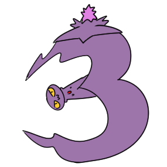

<ion-content class="background-page">
  <ion-fab vertical="top" horizontal="end" slot="fixed">
    <ion-fab-button color="warning" size="small" (click)="this.cerrarSesion()">
      <ion-icon name="power"></ion-icon>
    </ion-fab-button>
  </ion-fab>
  <ion-fab vertical="bottom" horizontal="start">
    <ion-fab-button color="rojodesa">
      
    </ion-fab-button>
    <ion-fab-list side="top">
      <ion-fab-button (click)="this.cambiarIdioma('ar')">
        
      </ion-fab-button>
      <ion-fab-button (click)="this.cambiarIdioma('en')">
        
      </ion-fab-button>
      <ion-fab-button (click)="this.cambiarIdioma('por')">
        
      </ion-fab-button>
    </ion-fab-list>
  </ion-fab>

  <ion-fab vertical="bottom" horizontal="end">
    <ion-fab-button color="rojodesa">
      
    </ion-fab-button>
    <ion-fab-list side="top">
      <ion-fab-button (click)="this.cambiarTipo(0)">
        
      </ion-fab-button>
      <ion-fab-button (click)="this.cambiarTipo(1)">
        
      </ion-fab-button>
      <ion-fab-button (click)="this.cambiarTipo(2)">
        
      </ion-fab-button>
    </ion-fab-list>
  </ion-fab>

  <div class="height-100 width-100"
    [ngClass]="{ 'flex-v': this.platform.isPortrait(),
    'flex-h': this.platform.isLandscape() }">
    <div *ngFor="let objeto of this._objetos[this._tipo]"
      class="buttons center-vertical center-horizontal"
      (click)="playObject(objeto +'_'+this._lenguaje)"
      [ngClass]="{ 'height-20 width-100 flex-h': this.platform.isPortrait(),
      'height-100 width-20 flex-v': this.platform.isLandscape() }">
      
      <!-- Audio Placeholder: {{objeto}}_{{this._lenguaje}} -->
    </div>
  </div>
</ion-content>